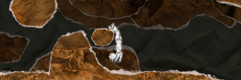

18 |
Modifications |
 |
|
In addition to the above mentioned Playmodes we have also added modifications to And Yet It Moves. These modifications allow you to play our game a bit differently and get a fresh view on your abilities. Once you have unlocked them, you can freely turn them on or off in the Modifications section of the Main Menu.
Speed
Want to play And Yet It Moves in fast-forward or slow motion? Do it here! Get the MC Colin Ray achievement to unlock this mode. 
Fixed Camera
Always get dizzy when the camera rotates? When you turn on this modification, the camera will stay fixed and only the character and the gravity will rotate! Get the Frozen achievement to unlock this mode.
Retro mode
In an older version of And Yet It Moves you could only rotate the world in 90 degree steps. If you turn on this modification, you can try out how it feels when your rotation is restricted! Get the Gregor achievement to unlock this mode. |
 |
 |
 |